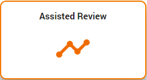
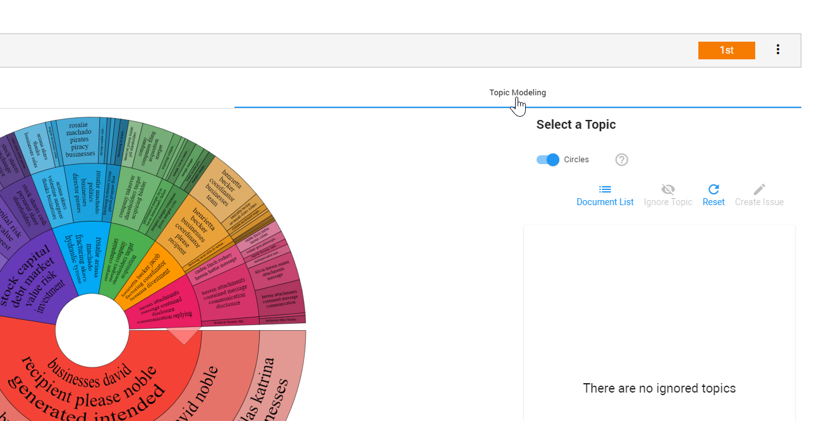
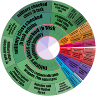
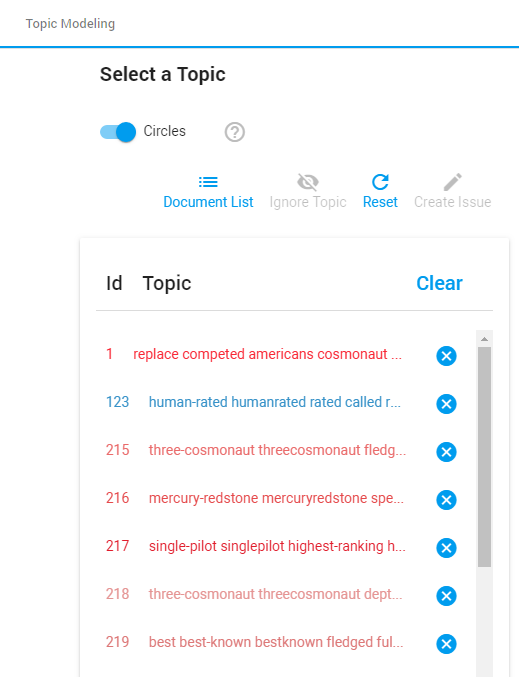

Discover clusters of words (topics) that frequently occur together to identify patterns. Topics are the most important words spread among the documents in a project.
The video below provides an example of how you can use topic modeling:
To include Topic Modeling, select the Use Topic Modeling option when adding a project to Assisted Review.
|
|
Note: You cannot add Topic Modeling to an existing project. |
After the project has been added, you can create an issue (training set) for each topic in the Topic Modeling tab. This allows you to review diverse sets of potential responsive documents and make predictions for the complete data set.
In the navigation panel of ZyLAB One, select Assisted Review.

|
|
Note: You can also access the Assisted Review page by clicking the Assisted Review button on the Matter Home page.  |
Select an existing project. If you have not yet created an Assisted Review project, see
Select the Topic Modeling tab.

Circles or Tree List
Select Circles to visualize the topics (clusters of words). The first discovered topics are at depth 1 (closest to the center), child topics are at depth 2 and further.
Double click on a topic to visually expand it.
Before:

After:

Select Tree List for the complete list of all discovered topics.

Weight
Select a topic to see the weight of it. The Weight indicates the relative proportion of the number of documents within this topic compared to its siblings in the Circles or Tree List.

Create Issue
Select a topic and click Create Issue to define the information
Ignore Topic
To prevent not responsive topics from dominating the visualization, ignore them:
Select a topic and click Ignore Topic.

Click X to add one ignored topic to the visualization again.
Click Clear to add all ignored topics to the visualization again.
Reset
Return to the original visual state by clicking Reset. Topics that had been selected or ignored return back to the default view.
Document List
To view all documents in your project:
Do not select a topic from Circles or Tree List.
Select Document List.
View the documents.
To view the documents characterized by a selected topic:
Select a topic from Circles or Tree List.
Select Document List.
View not only the documents, but also the query belonging to the selected topic. Top terms are highlighted within the documents.